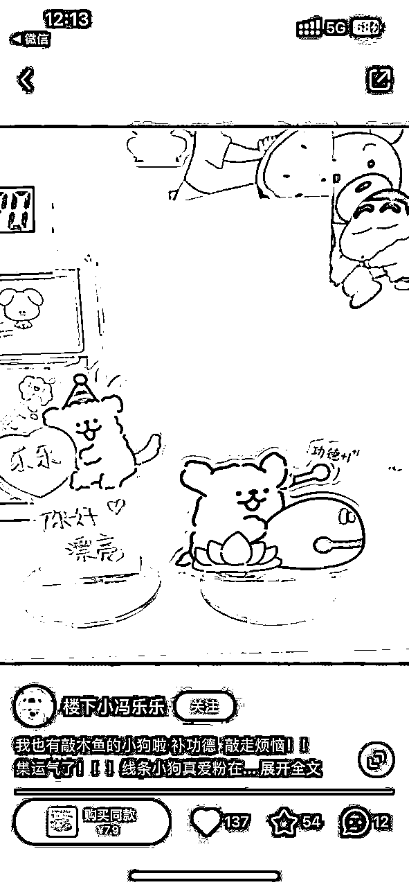

来源：https://btd7lq93bx.feishu.cn/docx/BS4edRjqeoqBg2xQUXPcBepWnFg
Hi，大家好呀，我是丸子。12月到现在中了三条小红书的风向标，所以认领了一个小红书的项目来拆解。今年从人大硕士毕业，有个勉强能养活自己的主业，副业努力了小半年也可以稳定月入过万了，暂时稳定了三个月，稳定更久了再来分享。
2024年想做一个平平无奇很会玩很开心的人，生财是我副业和商业探索上非常重要的一个节点，我喜欢这里，所以虽然已经过了项目拆解的截止日期了，依然想跟大家聊聊我眼里的小红书和背后的情绪风向和商业机会。
Enjoy！
我挑选的是这次的选题1，挑选的原因是我喜欢小红书，这个选题跟我有点缘分吧，好写也好玩。结论先行：小红书送礼账号真的赚钱吗？我的结论是：YES。
但怎么在这个选题下分到一杯羹，不同人可以根据自己手里的牌，选择去赚什么钱，在这里我列了三个类型的账号，不仅有普通人入场的机会，也有写给有自己供应链老板的种草矩阵对标分析，还有跨平台选品和做内容的思考，当然大部分都是我自己的想法，我今年刚毕业，是个生意上的小萌新，一些分析只是我根据自己的直觉和感受来的。
欢迎懂行的前辈指点和沟通交流，一起来补充一些数据，我们可以一起来完成这一份项目拆解。（我缺很多电商实操的经验 ，这个风向标拆解全靠想象）
| 分类 | 变现方式 | 适合人群 | 变现想象力 | 难度指数 | 卡点 |
|---|---|---|---|---|---|
| 普通人入局“送礼账号”的机会 | 广告植入变现 | 普通人 | 根据粉丝量来报价，粉丝量*0.1 | 🌟🌟 | 执行力 |
| 以“圣诞香薰”为案例的小红书礼物矩阵玩法 | 小红书电商/卖货 | 有供应链的老板/有小红书内容&商机敏锐度的操盘手 | 这个圣诞香薰矩阵有最低56w的GMV，都是低粉爆款，账号不涉及投流，利润空间还是很大的。 | 🌟🌟🌟🌟 | 选品&内容能力 |
| 以线条小狗创意礼物为例，抖音60wGMV的品如何在小红书依然保证能出品和赚钱 | 小红书电商/卖货 | 抖音电商做得挺好，想来小红书试试水的前辈 | 小红书跟抖音比起来各方面基础建设还是弟弟，之前在抖音火的品，在小红书依然可以推，但需要注意内容方向 | 🌟🌟🌟🌟 | 先得有点抖音经验，然后还要能嫁接到小红书上。橘生淮南和淮北大概这个意思 |
这个账号是很典型的“低粉爆款收割机”，800+粉丝但是主页多篇爆款，我31号看ta的时候只有600粉丝，短短几天上涨了200+，评论区的黏性很高，直接过来“怎么买”“求链接”
选题：蹭节日热度，例如圣诞、新年、520，做送礼指南。
封面：九宫格图做底图，上面添加白色花字，黄油相机就可以完成。
图片：后续图片就把首页的图片平铺，每张图加一点点文字即可。
文案：文案就配着图片写，差不多就行。
12月底加博主确认了一下报价，单品植入做礼物合集，投放价100，普通人操作起来难度不高，个人觉得，性价比还是很高的。（下面是跟这个博主沟通调研的截图）
这个商机圈友@罗破帽也分享了，他发的风向标帖，也中标了。👉https://t.zsxq.com/15jkn4UuL
两个账号都属于低粉小红书爆品账号，不到500粉的账号，每个账号都可以带出去2000+的销量。从IP属地来看的话，应该是一个矩阵操盘手的作品，我搜到了这两个，小红书应该还有他家做过的痕迹。
选品：品在我看来是对需求的洞察和解决方案的呈现，在这里他选择的礼物是“结合圣诞节的氛围香薰”
封面：远观的氛围照作为封面，漆黑一片会把香薰的灯光氛围烘托感烘托出来，一眼看过去有重点。
视频：BGM是圣诞风的音乐，拍摄了从暗到亮的全过程，氛围感/代入感很强烈。
标题/文案：细节满满，Emoji丰富，用了小红书推荐品的常见话术。
1688搜索同款大概报价在60块左右，每单利润70元左右。因为是低粉爆款，大概率是没有投流等额外支出的，按照这两个账号出的4000单的话，靠圣诞节一个品就可以出28w的利润了。
但绝对不止这个价钱，因为：1. 矩阵绝不止这两个账号；2. 出货多的话，一定是可以谈到更低的价钱的。
这个商机中了生财有术的标👉https://t.zsxq.com/15zOM4moF
抖音真的太猛了，这个品我昨天发出的时候销量是6w，过了24h之后，现在的销量已经是6.2w了 ..... 我人麻了

说实话我现在写文的时候一时间分不清这个品到底是小红书先火的还是抖音先火的，我觉得，小红书火的品，如果抖音没做过，那抖音就可以再做一遍。抖音火过的品，小红书没做过，小红书也可以再做一遍。
我的个人实拍，分享给大家，可好玩了！
同样一个品，在小红书和抖音的内容方向是完全不一样的。
创作内容的主语是不一样的，这种微妙的差异导致小红书做“男朋友安排木鱼小狗”这个方向的笔记没有火起来，我承认做矩阵，怼量很重要，但是方向不对，那就是在错误的道路上狂奔。这背后是文化，是女性意识崛起，是平台差异，是社区文化。我也很想跟大家详细聊聊这块，我有感觉但我说不清楚 ...... 等我能说清楚了再来分享吧。
这个品1688大概卖7块钱吧，一单赚5块，6w单就是30w。更何况我看抖音这个趋势还得涨 .............
我加入生财三年了，刚加入生财跟着生财做项目的时候，我做一个扑街一个，但小红书不是，我第一次做小红书三天就出了百赞爆文，内容还基本是我原创的。四个来月做了一个7000+粉丝，变现过万的账号，单篇笔记可以涨粉过千，类似的笔记大概产出了3篇多吧。当时做账号的记录也有发生财，后来倒霉我就认真倒霉去了，大概一年没怎么看过生财。
今年从人大毕业之后找副业，开始教人做小红书，效果还可以，不仅自己会做还多少会教一点点吧，大部分客户喜欢我，我也喜欢我自己。现在也是在做小红书相关的咨询/代运营，也许过个半年我就可以大言不惭叫自己操盘手了。
做着做着我突然发现我居然能发现低粉蓝海爆款了，我不是那种看大盘数据的选手，我写内容和找爆款的方式是直觉。一般就是我觉得此子必火，验证一下确实还行，顺手发出来给大家看看，然后我就中标了。
我过往产出的三个中标，都是类似的：
回到礼物账号这个话题里，我的态度是：万物皆可成为礼物，只要你想让它是礼物，它就是礼物。送礼账号可以做集合，我有产品有供应链，那么我的货就可以是礼物，通过跟热点和人类情感结合的运作，我就可以卖出去。
这几个账号火的原因是跟圣诞/元旦结合了，他们提供了他们的解决方案，所以他们赚到了钱，但我们这一辈子不止有这一个元旦呀，我们还有下一个元旦，除了元旦，我们还可以有新年。龙年要到了，中国人对龙是有一种莫名偏爱的，针对这个意象又可以做探索和发掘了诶。
当然，节日不仅可以是传统存在的，还可以是人造的，比如生财每年的418。
比起研究生意，我更喜欢感知情绪，最近喜欢看山海经，喜欢打游戏，当然也活在自己的年龄里。我这个年龄段人喜欢的东西，我都想喜欢个遍。很抱歉风向标拆解的作业提交有点晚了，因为昨天去纹眉了，我今年可太想纹眉了，新年可以有个新彩头不是吗？
失之东隅，收之桑榆，虽然错过了生财风向标拆解最后的DDL，但是我跟纹眉师聊了一下，这个小小的纹眉店每个月有200万的GMV，我又收获了一个行业的新知识，而且人家今年还要开新店了，躺在这里的瞬间我想起了金庸里的张无忌给赵敏的承诺是：我要一生为你画眉，也只为你画眉。金庸老爷子那么聪明，为什么选择了“眉”这个意象呢？我们中国人表达情感的方式是温和的，也是温暖的。
当然了，办公室的姐姐看了我的眉毛之后纷纷问我要链接，我朋友看到我的经历之后，把对方的客服号从微信的屏蔽世界里解放出来了。大概我就是个平平无奇的种草小能手吧。
关于什么是礼物，古人说过的：“江南无所有，聊赠一枝春”“桃花潭水深千尺，不及汪伦送我情”“洛阳亲友如相问，一片冰心在玉壶”，无独有偶，西方有个小说家叫欧亨利，有个小说叫《麦琪的礼物》，大意是：我愿用我最珍贵的东西去换你的笑靥如花。
送礼送到心坎上的意思就是，四两拨千斤，每个人对价值的定义不一样，有人将一些东西视之敝履，有些人却看作珍宝，一些可以做内容搜索爆款的关键词可以给大家分享一下，“给男朋友买什么”“看望病人买什么”“给领导过年买点啥”，在这个过程中，你的关键词越细分，你的需求也就越精准，内容被同类型人喜欢的概率也就越大，事半功倍大概这个道理啦。
比如图三右下角，新年送导师礼物，12.27的产出文案，现在将近千赞。
我挺推荐大家来小红书玩玩的，这里利好原创，利好有内容能力的人，利好生活小确幸，如果你也有很多小确幸，或者你是一个有温度的品牌，你有很多有温度的产品，欢迎来跟我链接一起玩，我们一起在小红书做创作。
毕竟，出现在别人生命里，要像一份礼物。🎁